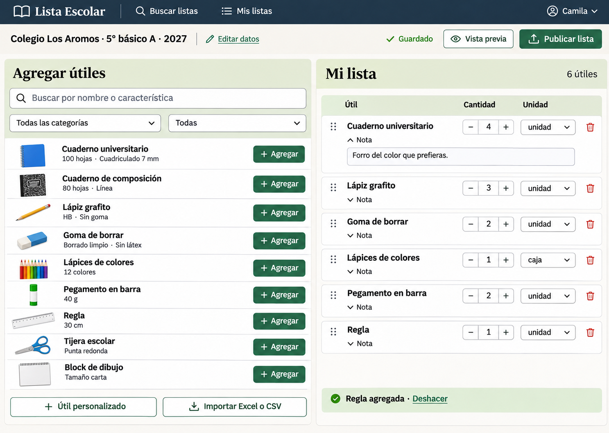
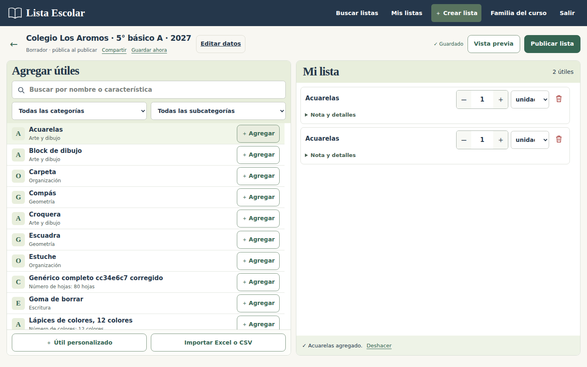
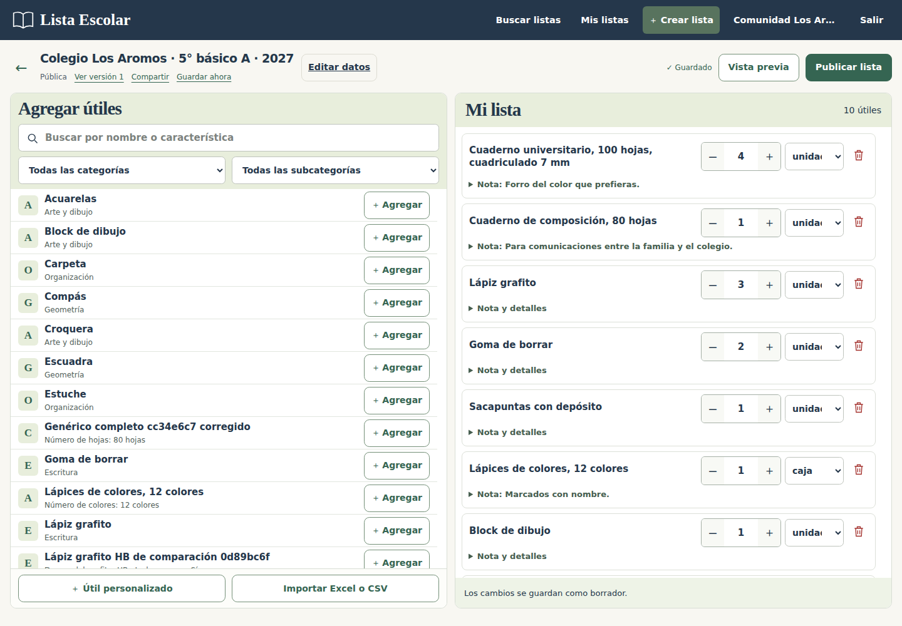

Editor de listas · escritorio
Catálogo y lista editable comparten el espacio. Las cantidades y los nombres reflejan los datos de cada escenario de prueba.




Ver 1 captura adicional de Editor de listas · escritorio

